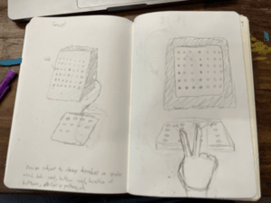

Object final project
Out of all the projects I've had to do for college, my personal favorite (in retrospect) was my final project for Object. It was a group project where we were to combine what we learned about making digital ciruits and making a, IRL object from scratch. In the end, out team decided on making an audio visualizer where, when a button is pressed, it would play a "beep" through a conical speaker, with an LED strip inside the speaker being light up to different colors depending on the button pressed. There were 8 buttons in total accounting for a whole octive.
Unfortunantly for me, not only was I in charge of doing the coding, but I also was in charge of the soldering, which is a problem considering how unstable my hands are. The easiest way I could describe this project was as a problem child. Nothing ever worked, some new problem always seemed to pop up. Buttons don't fit, capacitors not properly working, the soldering falling out, lights don't turn on properly, sounds don't play properly, and so on. For every problem solved, about 2 more popped up. In the end, I spend close to 20-30 hours trying to get the dumb thing up and running.
However, things eventually started to work out. Each time the soldering stuck, or the code functioned as intended, it was a moment of celebration. I still distinctly remember sitting in the BTU lab, trying to debug the lights and audio because they would only turn greeen and the only 1 tune would play (poorly) and, when I finally solved the problem, I audibly cheered. It had taken so long to debug, but it felt really good getting it to finally work. This feeling increased as the project was coming together. I remember on demo day getting a lot of positive feedback and praise on it (and my persistant work ethic), and for once, I felt extremely prideful with something I made despite it not living up to my perfectionist tendencies.